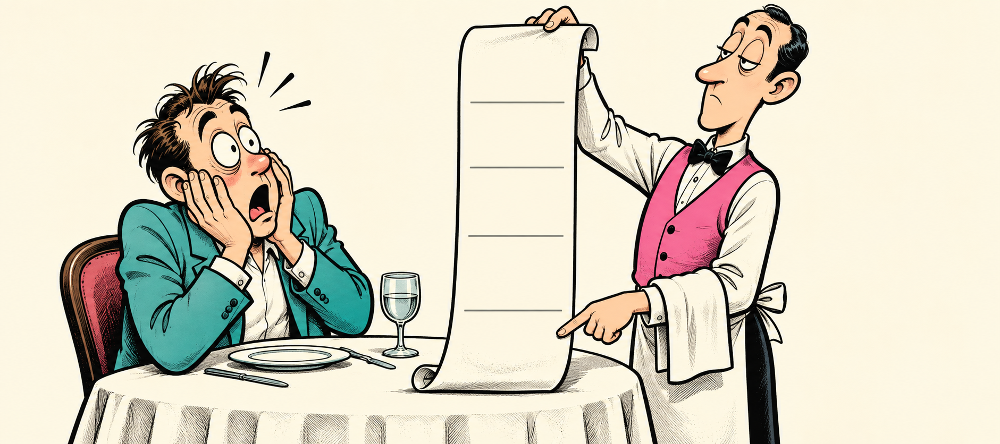

<section id="meme-receipt" style="background:#000">
<h2 class="t nok">А ЗАКРЫВАЮЩАЯ СКОБКА?</h2>

<p class="meme-label ink" style="left:895px;top:430px;width:175px;font-size:32px">reserve</p>
<p class="meme-label ink" style="left:895px;top:527px;width:175px;font-size:32px">insert</p>
<p class="meme-label ink" style="left:895px;top:624px;width:175px;font-size:32px">output</p>
<p class="meme-label ink" style="left:895px;top:721px;width:175px;font-size:32px">destroy</p>
<p class="meme-caption">Вы же ещё <span class="hash">закрывающую скобку</span> заказывали</p>
<aside>Закрывающую скобку тоже включили в счёт. [пауза 2 с]<br>Поэтому измеряем всю операцию. Теперь посмотрим по шагам, какую работу делают оба алгоритма.<br>[→ следующий слайд]<br><br>──────────<br>Источники и условия<br>Оригинальная иллюстрация ImageGen, V6; assets/src/img/memes_v6_early_prompts.txt. Мем №34: reserve, вставки, выгрузка и уничтожение входят в полный замер. Закрывающая скобка обозначает вызов деструктора временной таблицы.<br></aside>
</section>
